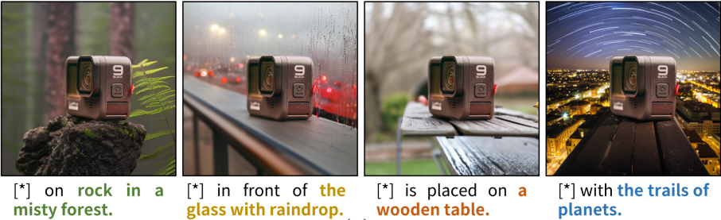
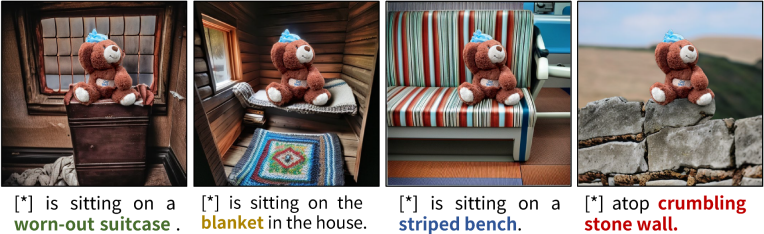
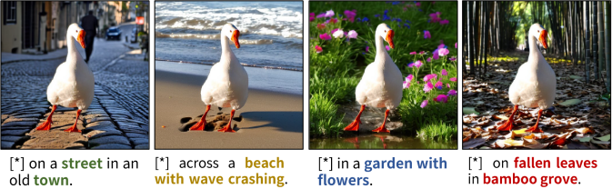
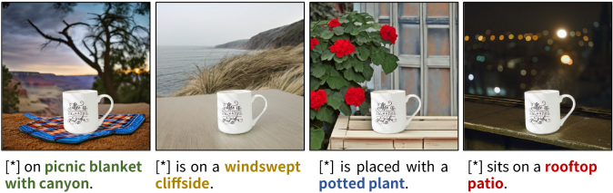
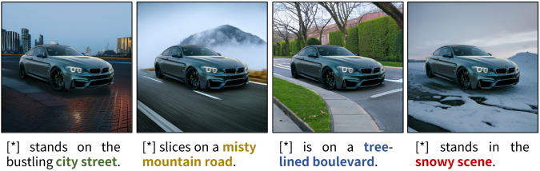
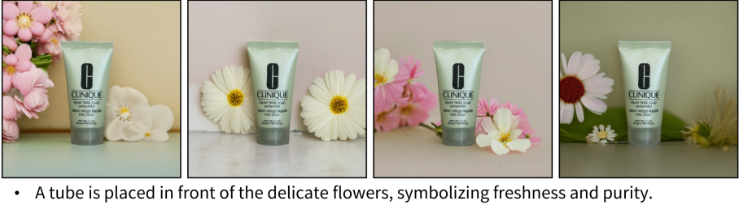
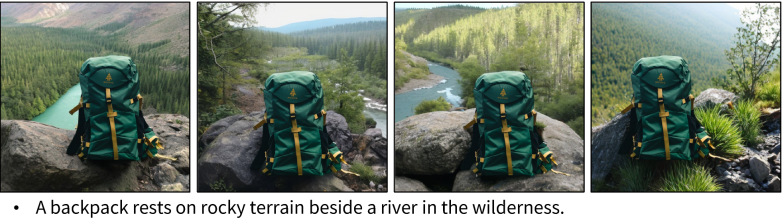
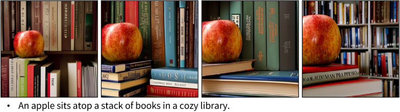
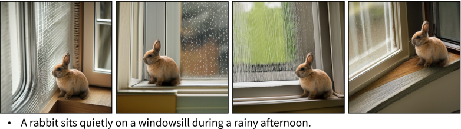

Multi generation
The generation results under different text prompts





The multi generation results in same case





BibTeX
@inproceedings{han2025toward,
title={Toward Better Out-painting: Improving the Image Composition with Initialization Policy Model},
author={Han, Xuan and Zhao, Yihao and Ge, Yanhao and You, Mingyu},
booktitle={Proceedings of the IEEE/CVF International Conference on Computer Vision},
pages={16938--16947},
year={2025}
}